この画面は手順の説明です。ホーム画面に追加するときは、先に Hiポスを開く を押して、Hiポスの画面の右上の［アプリ化はこちら］から進めてください。
スマホのホーム画面に「Hiポス」のアイコンを置くと、次からはアイコンを押すだけで開けます。
お使いのスマホを選んで、上から順に進めてください。
すでに Safari で開いている人は、手順3から始めてください。
- 1画面の右下のボタンを押します。
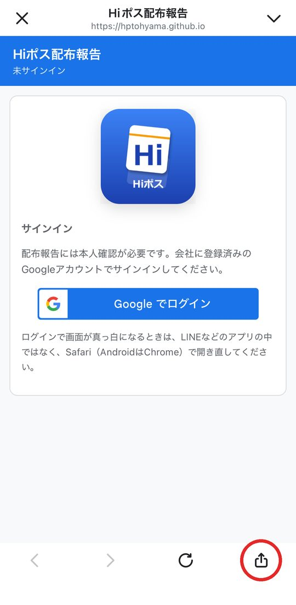
- 2「ブラウザで開く」を押します。
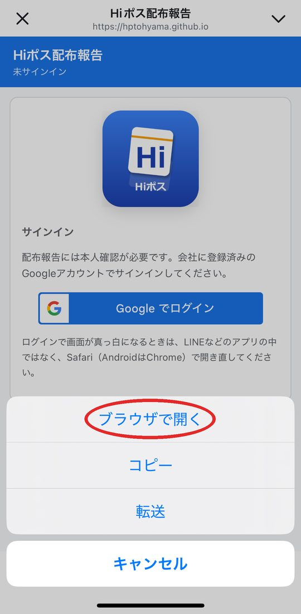
※Safari で開くと、この手順は閉じます。開いた画面の右上の［アプリ化はこちら］をもう一度押して、手順3から続けてください。
- 3Safari で開いたら、右下の「…」を押します。
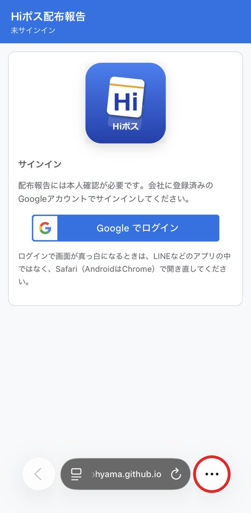
※「…」が無いときは、画面の下の共有ボタン（四角に上向きの矢印）を押します。出てきた一覧を指で上に動かして「ホーム画面に追加」を押し、手順7へ進んでください。
- 4「共有」を押します。
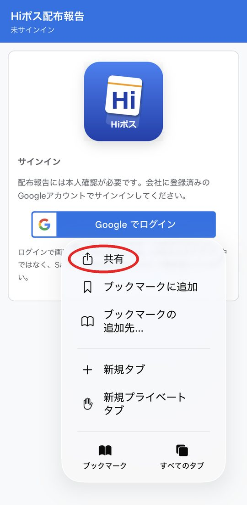
- 5「表示を増やす」を押します。
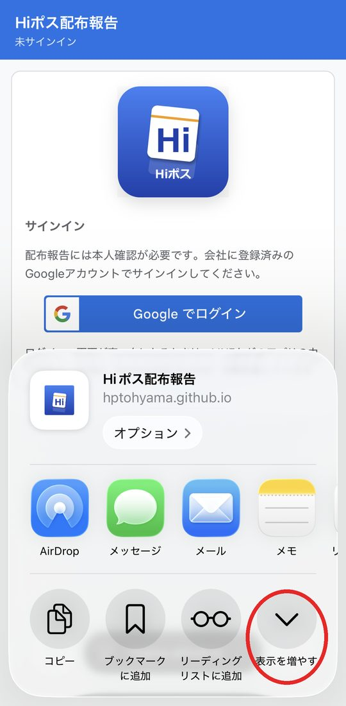
- 6「ホーム画面に追加」を押します。
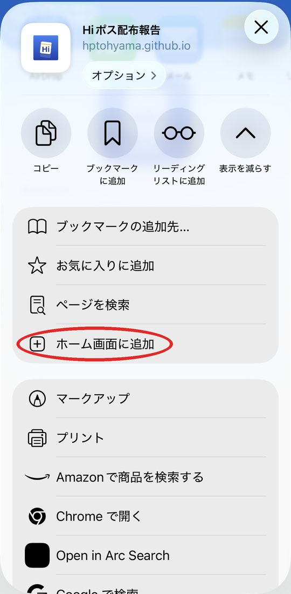
- 7右上の「追加」を押します。
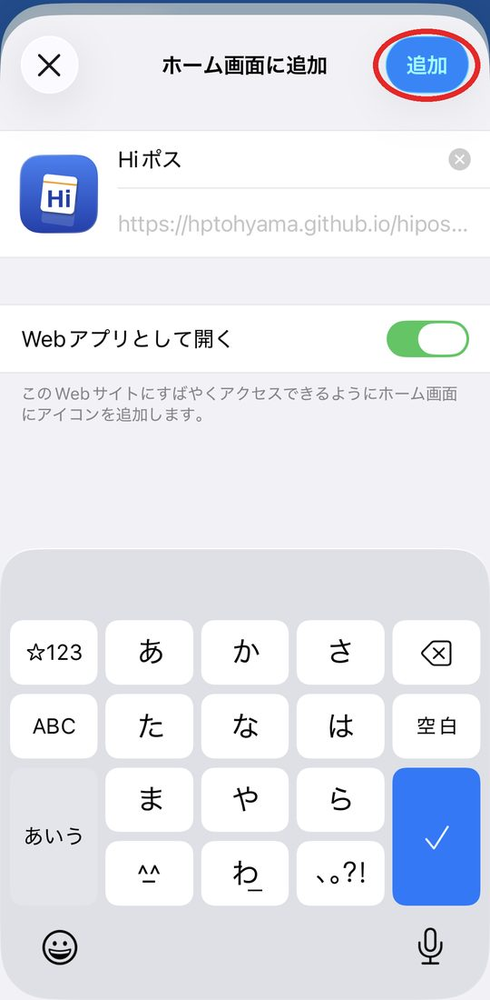
※「Webアプリとして開く」はオンのままで大丈夫です。
- 8ホーム画面に「Hiポス」のアイコンができたら完了です。
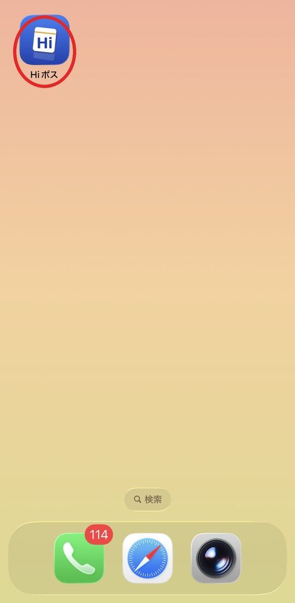
次からは、このアイコンを押して開いてください。
すでに Chrome で開いている人は、手順2から始めてください。
- 1画面の右下のボタンを押します。Chrome で開きます。
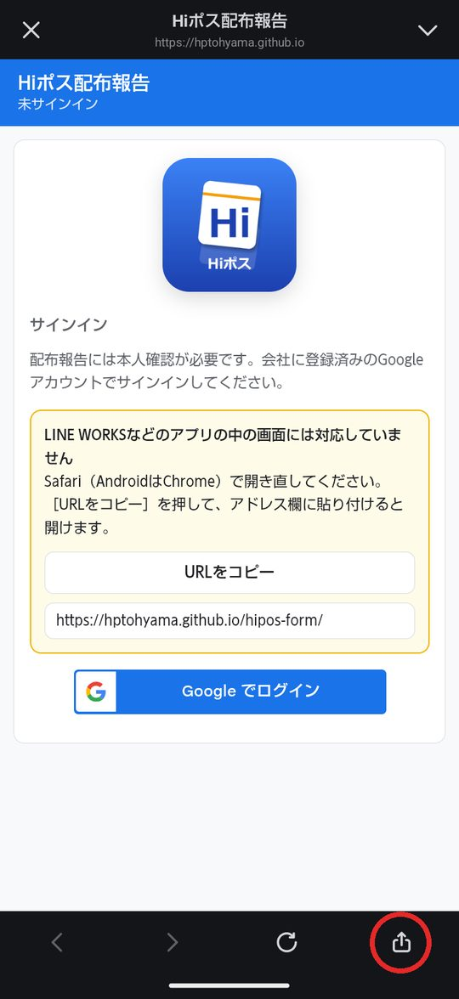
※Chrome で開くと、この手順は閉じます。開いた画面の右上の［アプリ化はこちら］をもう一度押して、手順2から続けてください。
- 2Chrome で開いたら、右上の「︙」を押します。
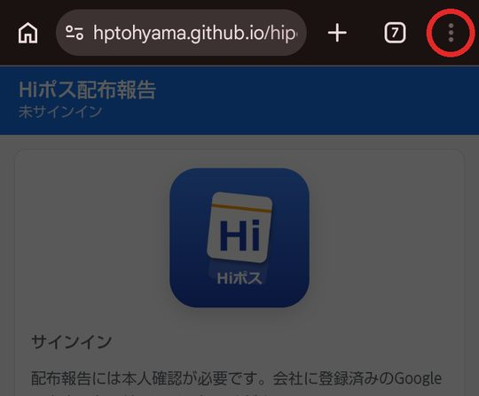
- 3「ホーム画面に追加」を押します。
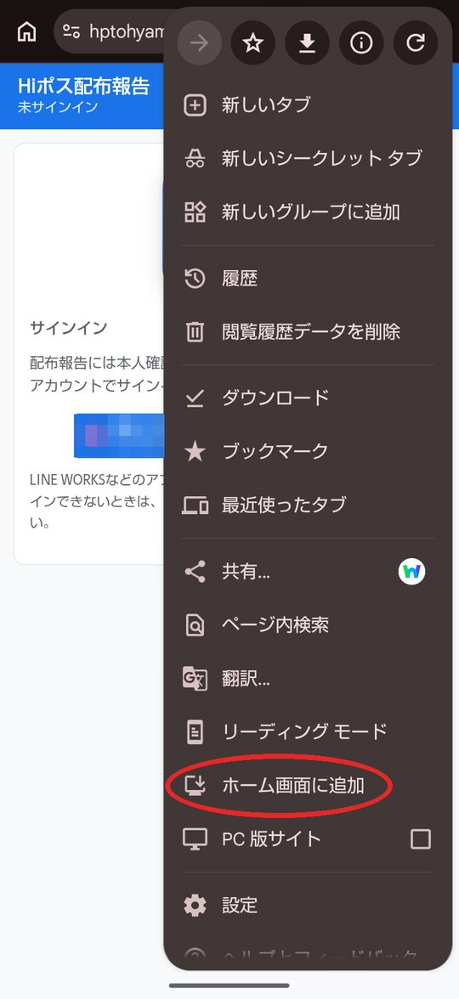
- 4「インストール」を押します。
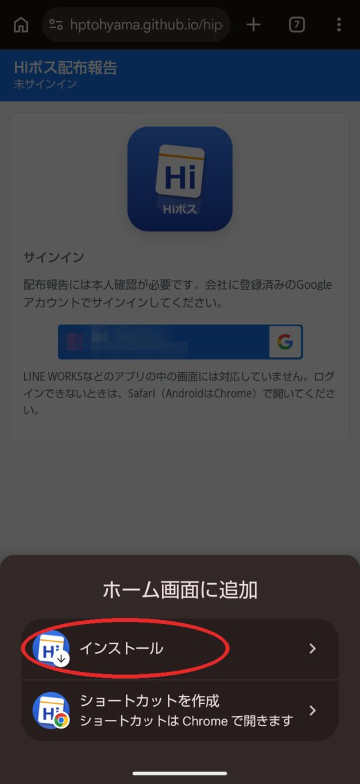
- 5もう一度「インストール」を押します。
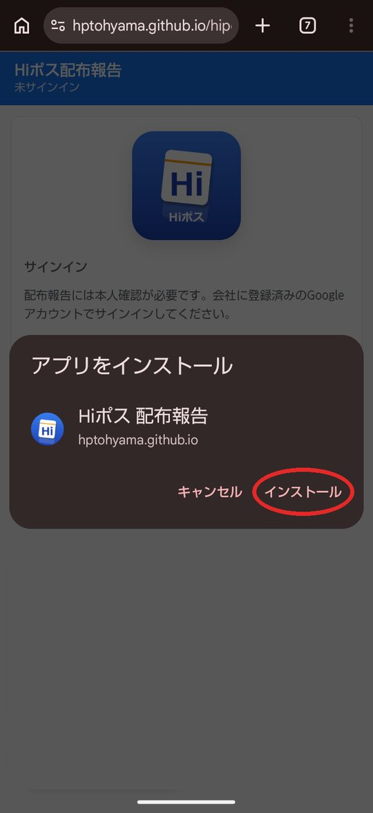
- 6ホーム画面に「Hiポス」のアイコンができたら完了です。
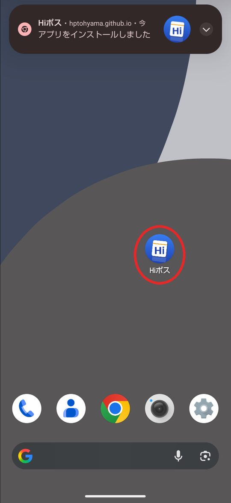
次からは、このアイコンを押して開いてください。